#install.packages("ggplot2")
#install.packages("psych")KlinMeth-Vorkurs - Sitzung 3
KlinMeth-Vorkurs - ggplot
Heute wollen wir uns damit beschäftigen, wie man schöne Grafiken mit R erstellen kann. Dazu werden wir ggplot benutzen.
Außerdem fangen wir heute schon damit an, so zu arbeiten, wie wir es bei den meisten Analysen im Semester auch tun werden. Das heißt wir laden zunächst die nötigen Pakete, setzen dann das working directory und laden die Daten und machen zum Schluss einige Variablen zu Faktoren, um dann mit einem “polierten” Datensatz weitermachen zu können.
Vorbereitung
Für alle, die ggplot in der letzten Sitzung noch
nicht installiert haben, kommt hier nochmal der
nötige Befehl. Außerdem brauchen wir heute das
psych-Paket, was ihr auch noch
installieren müsst.
Zusätzliche ggplot-Pakete
Für das weitere Arbeiten und eure eigenen Abschlussarbeiten (wenn ihr sie mit R schreibt) gibt es noch einige weitere praktische Pakete, die ihr auch installieren könnt, wenn ihr wollt.
#install.packages(c("colorBlindness", "directlabels", "dplyr", "gameofthrones", "ggforce", "gghighlight", "ggnewscale", "ggplot2", "ggraph", "ggrepel", "ggtext", "ggthemes", "hexbin", "Hmisc", "mapproj", "maps", "munsell", "ozmaps", "paletteer", "patchwork", "rmapshaper", "scico", "seriation", "sf", "stars", "tidygraph", "tidyr", "wesanderson"))Pakete laden und Working directory setzen
Nun laden wir wie versprochen die Pakete und setzen das working directory (auf euren Pfad anpassen).
library(ggplot2)
library(psych)
Attaching package: 'psych'The following objects are masked from 'package:ggplot2':
%+%, alphasetwd("C:/Users/bente/Documents/Studium/BachelorPsychologie/Projekte/KlinMethGoettingen/Vorkurs")Jetzt sind wir bereit, die heutigen Daten zu laden und Faktoren korrekt zu kodieren.
dat = read.csv("consumption_ophase.csv")
dat$gender = factor(dat$gender, levels=1:4, labels=c("female", "male", "diverse", "no answer"))
dat$home = factor(dat$home, levels=1:2, labels=c("north", "south"))Grafiken für zwei kontinuierliche Variablen
Zunächst wollen wir uns mit zwei kontinuierlichen Variablen beschäftigen und ggplot dabei ein bisschen besser kennenlernen.
Grundsätzlich benötigt ggplot immer eine
Datenvariable und ein
aes()-Objekt, was für aesthetics steht.
Mit diesem Objekt sagen wir ggplot, welche Variable
des Datensatzes welche Rolle einnimmt. Einerseits
kann man festlegen, welche Variable auf die x- bzw.
die y-Achse kommt. Andererseits lassen sich
Gruppierungsvariablen, Variablen zum Einfärben und
bspw. Variablen, die den Linientyp bestimmen,
festlegen.
Scatterplot
Bringen wir zunächst einfach mal das Gewicht auf die x-Achse und den Alkoholkonsum auf die y-Achse.
Nur das reicht aber nicht aus, weil wir noch
nicht festgelegt haben, wie wir plotten wollen.
Es gibt dafür immer viele Möglichkeiten, bei
einem Scatterplot wollen wir aber meist Punkte
sehen, deshalb nutzen wir
geom_point(). Wir können die beiden
Befehle einfach mit einem
+ hintereinanderschalten.
ggplot(dat, aes(x = weight, y = alcohol)) +
geom_point()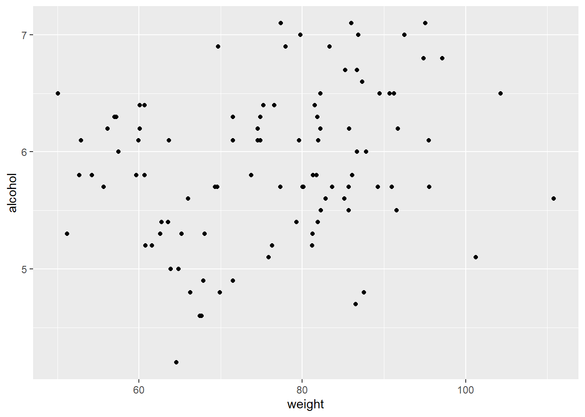
Im nächsten Schritt machen wir zwei Sachen. Erstens lassen wir R die Punkte je nach Heimat der Person einfärben. Außerdem speichern wir den gesamten Plot in einer Variable ab. Geben wir dann die Variable aus (indem wir einfach nur den Namen der Variable schreiben) wird der gesamte Plot ausgegeben. Das ist deshalb praktisch, weil wir dadurch nicht immer wieder die vorherigen Zeilen schreiben müssen, wenn wir etwas zum Plot hinzufügen wollen.
p = ggplot(dat, aes(weight, alcohol, color = home)) +
geom_point()
p
Nun fügen wir zu dem Scatterplot labels und
einen Titel hinzu. Man könnte hier auch in der
labs()-Funktion einen weiteren
Parameter
title="Relationship between..."
übergeben, anstatt ggtitle() zu
benutzen.
p = p +
labs(x = "Weight in kg", y = "Alcohol consumption in l") +
ggtitle("Relationship between weight and alcohol consumption")
p
Außerdem können wir eine Linie mit Konfidenzintervall durch die Daten legen, die den Mittelwert am besten annähert. Diese Linie wird automatisch nach Farbe getrennt gezeichnet.
p +
geom_smooth()`geom_smooth()` using method = 'loess' and formula 'y ~ x'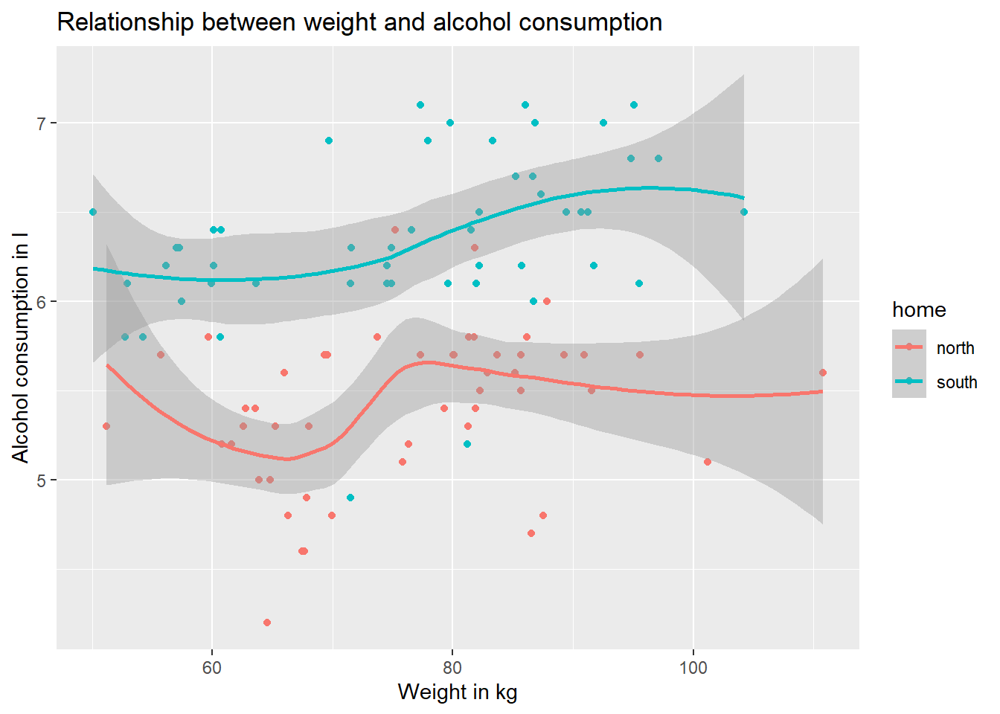
Diese Linie kann auch eine Gerade sein.
p +
geom_smooth(method = "lm")`geom_smooth()` using formula 'y ~ x'
Eine wichtige Funktionenklasse in ggplot sind
die
facet-Funktionen. Mit ihnen lässt
sich der Plot nach einer Variablen aufteilen.
Als Beispiel teilen wir nach
gender auf.
ggplot(dat, aes(weight, alcohol)) +
geom_point() +
facet_wrap(~gender)+
labs(x = "Weight in kg", y = "Alcohol consumption in l") +
ggtitle("Relationship between weight and alcohol consumption")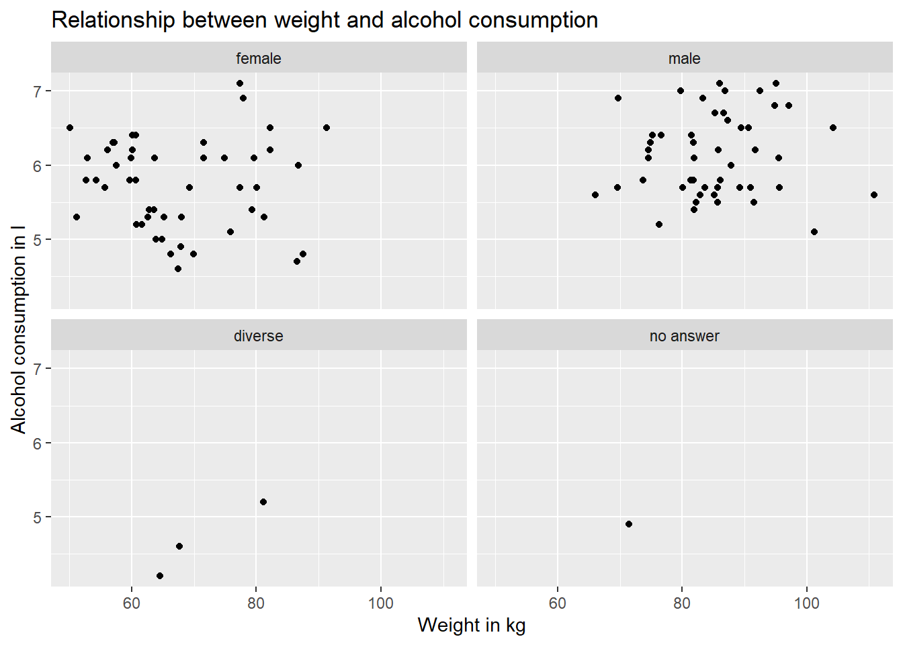
Wir können auch nach mehreren Variablen mit
facet_grid() aufteilen. Hier bspw.
nach home und gender.
p = ggplot(dat, aes(weight, alcohol)) +
geom_point() +
facet_grid(home~gender)+
labs(x = "Weight in kg", y = "Alcohol consumption in l") +
ggtitle("Relationship between weight and alcohol consumption")
p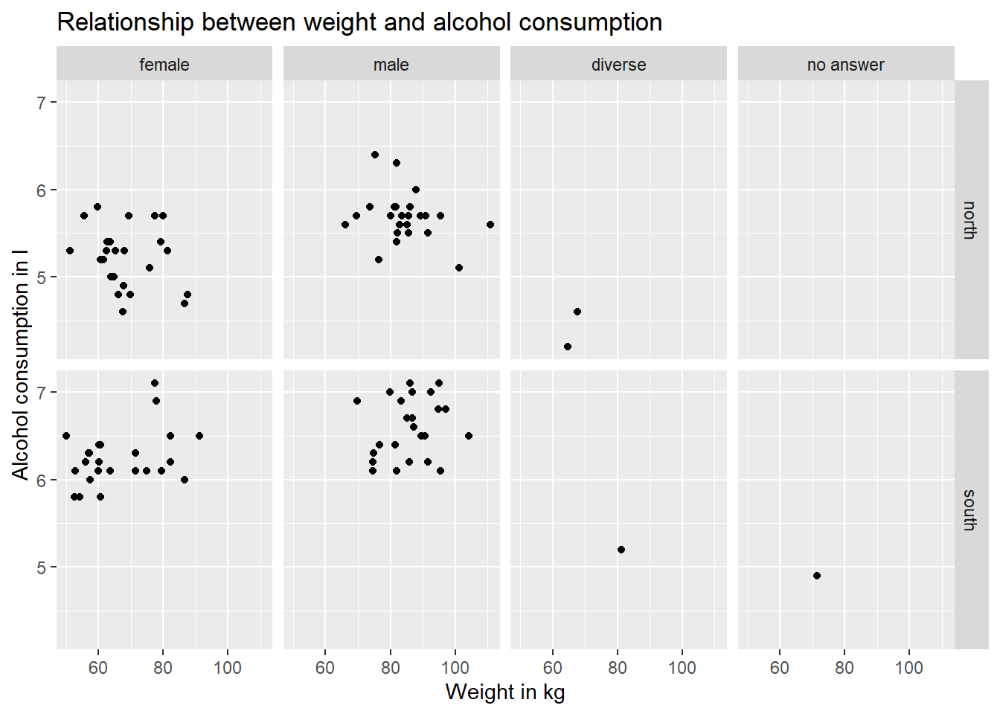
Zu dem letzten Plot fügen wir nun sekundäre Achsen hinzu, um die beiden Faktoren, nach denen geteilt wird, auch im Plot zu vermerken (fortgeschritten).
p = p +
scale_y_continuous(sec.axis = sec_axis(~ . , name = "Home", breaks = NULL, labels = NULL)) +
scale_x_continuous(sec.axis = sec_axis(~ . , name = "Gender", breaks = NULL, labels = NULL))
p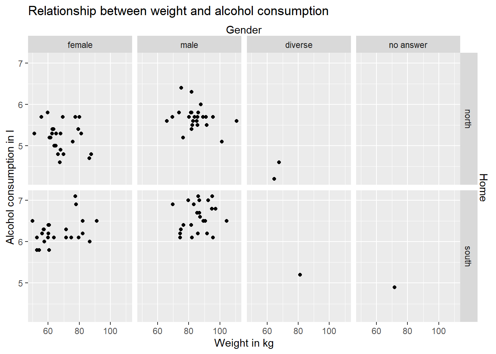
Wenn wir eine Grafik erstellt haben, wollen wir
sie meist auch speichern. Das geht mit ggplot
ganz einfach mit
ggsave(). Hier können wir auch
Breite und Höhe vergeben, wenn wir wollen.
#Speichern der Graphik
## Graphikobjekt wird mittels ggsave als Graphik in working directory gespeichert
ggsave("plot.png", p, width = 5, height = 5)Histogramme
Histogramme sind gut um die Verteilung einer Variable zu sehen.
ggplot(dat, aes(alcohol)) + geom_histogram() + facet_wrap(~gender)`stat_bin()` using `bins = 30`. Pick better value with `binwidth`.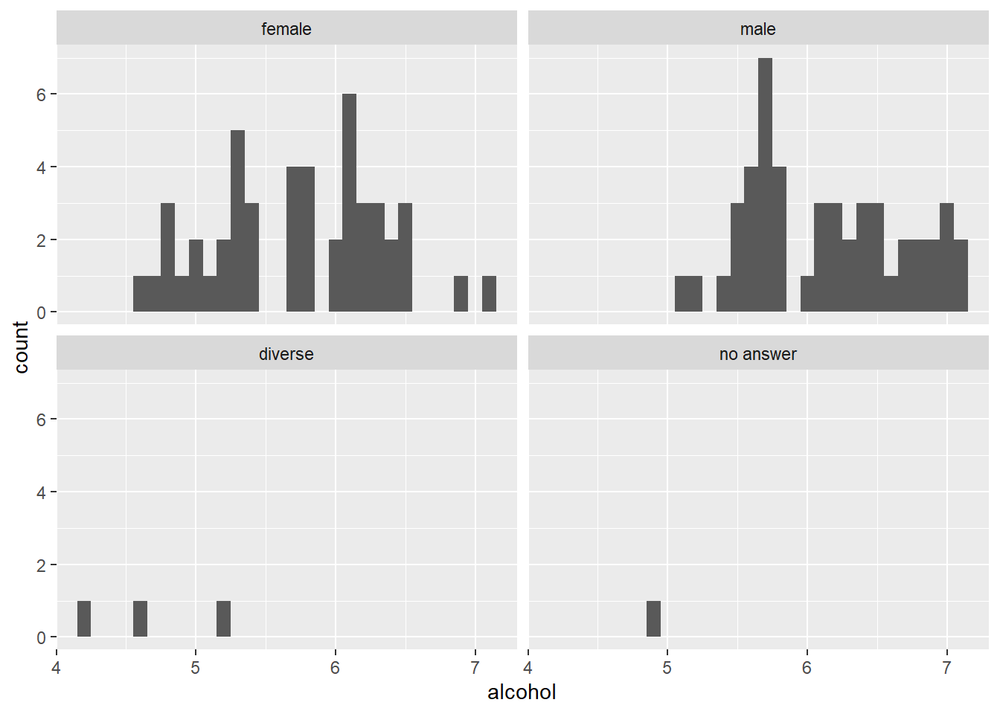
Neben geom_histogram() gibt es bspw.
auch geom_bar() zum Erstellen von
Histogrammen. Mit ylim() setzen wir
hier außerdem die Grenzen der Y-Achse.
ggplot(dat, aes(alcohol)) + geom_bar() + facet_wrap(~gender) + labs(x = "Alcohol consumption in l", y = "Count") + ggtitle("Alcohol consumption by gender") + ylim(0,10)
Grafiken für kategorialen Praediktor und kontinuierliches Kriterium
Meist haben wir auch einen kategorialen Prädiktor und ein kontinuierliches Kriterium. Bei unseren Daten könnten wir uns bspw. fragen, ob es einen Unterschied in der Häufigkeit der Teilnahme an Veranstaltungen der Orientierungswoche zwischen Menschen mit Heimat in Nord- bzw. Süddeutschland gibt.
Grafiken für Rohdaten
Damit wir die einzelnen Datenpunkte gut sehen
können, sollten diese nicht alle genau über den
Strichen für den Norden bzw. den Süden sein,
sondern sich ein bisschen um den Strich herum
verteilen. Dies geht mit
geom_jitter(), wo wir eine Breite
festlegen, damit sich die Punkte auf der x-Achse
um die Striche gruppieren. Wir setzen dabei die
Höhe aber auf 0, weil wir die Daten verfälschen
würden, wenn wir sie auf der y-Achse
herumschieben.
ggplot(dat, aes(home, visited)) +
geom_jitter(width = 0.2, height = 0)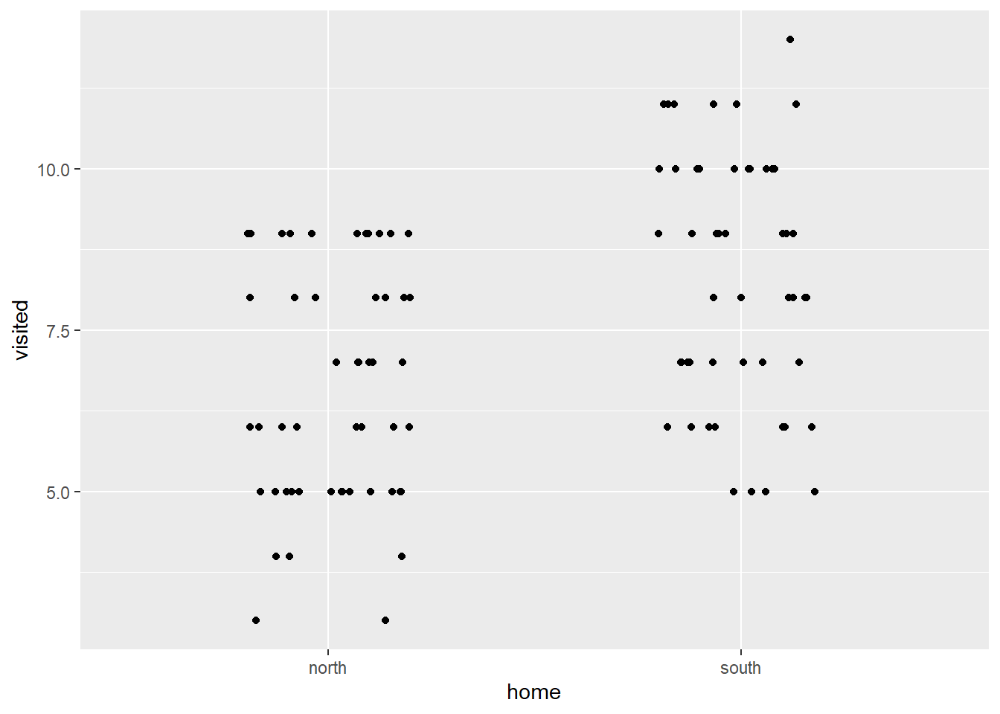
Fällt euch eine Sache auf, die wir noch an diesem Plot verbessern könnten? Wenn ihr es herausfindet, könnt ihr gerne mal versuchen, entsprechende Änderungen am Plot zu machen.
Wir sehen jetzt zwar die einzelnen Punkte des Kriteriums, haben aber noch keine wirklich gute Idee von ihrer Verteilung. Um die zu veranschaulichen, lassen sich Violinenplots benutzen. Das Prinzip dabei ist, dass die Verteilung der Variable auf die y-Achse gezeichnet und dann an der y-Achse gespiegelt wird. So entsteht eine Figur, die unter Umständen wie eine Geige aussieht.
ggplot(dat, aes(home, visited)) + geom_violin() + geom_point() + geom_jitter(width = 0.2, height = 0)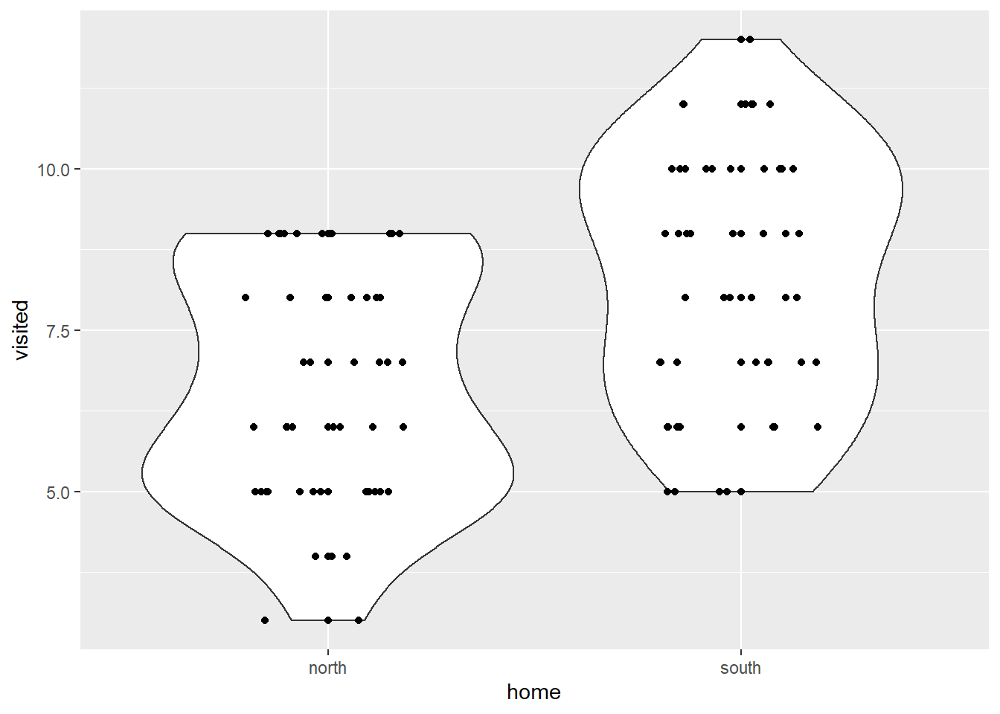
Bei einigen geoms lässt sich mit dem
stat-Parameter ausdrücken, welche
Statistik eingezeichnet werden soll. Das nutzen
wir hier zusammen mit
stat_summary(), um Mittelwert und
Konfidenzintervall einzuzeichnen. Außerdem hat
ggplot viele verschiedene Themes, von denen wir
hier das populäre
theme_classis() benutzen. Damit
sind wir auch schon eher im Einklang mit
APA-Standards für Grafiken.
# Mit violin plot und Mittelwert mit Fehlerbalken
ggplot(dat, aes(home, visited)) + geom_violin() + geom_point() +
geom_jitter(width = 0.2, height = 0) +
geom_point(stat="summary",fun = mean,size=1.5, col = "red") +
stat_summary(geom="errorbar", fun.data=mean_se, width=.2, col ="red")+
theme_classic()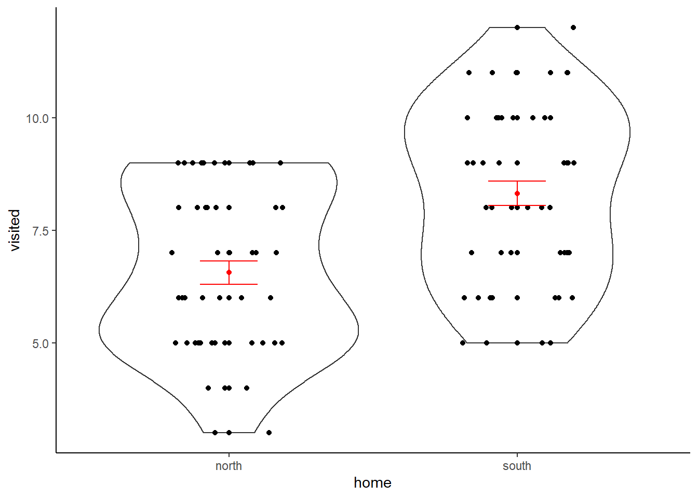
Grafiken für Mittelwerte in verschiedenen Gruppen
Um deskriptive Werte für Faktoren zu
veranschaulichen, können wir natürlich erst die
deskriptiven Werte mit
describeBy() berechnen und das
Ergebnis dann mit ggplot darstellen.
descriptives <- describeBy(visited ~ home, mat = TRUE, data = dat)
# Name des Faktors einfügen
names(descriptives)[names(descriptives) == "group1"] <- "home"
# Konfidenzintervall ausrechnen
descriptives$ci_95 <- descriptives$se*1.96
# Grafik machen
ggplot(descriptives, aes(x=home, y=mean)) +
geom_point() +
geom_errorbar(aes(ymin=mean-ci_95, ymax=mean+ci_95), width=.1)+
ggtitle("Visited events by home")+
theme_classic()
Einfacher wird das Ganze aber dadurch, dass
ggplot das Berechnen der deskriptiven Werte auch
selbst übernehmen kann. Dazu nutzt man die
Parameter fun und
fun.data und gibt das gewünschte
geom auch als Parameter mit. Hier
nutzen wir als Beispiel Balken
ggplot(dat, aes(home, visited)) +
stat_summary(fun = mean, geom = "bar", fill = "dark blue") +
stat_summary(fun.data = mean_se, geom = "errorbar", width=.3)+
ggtitle("Visited events by home")+
theme_classic()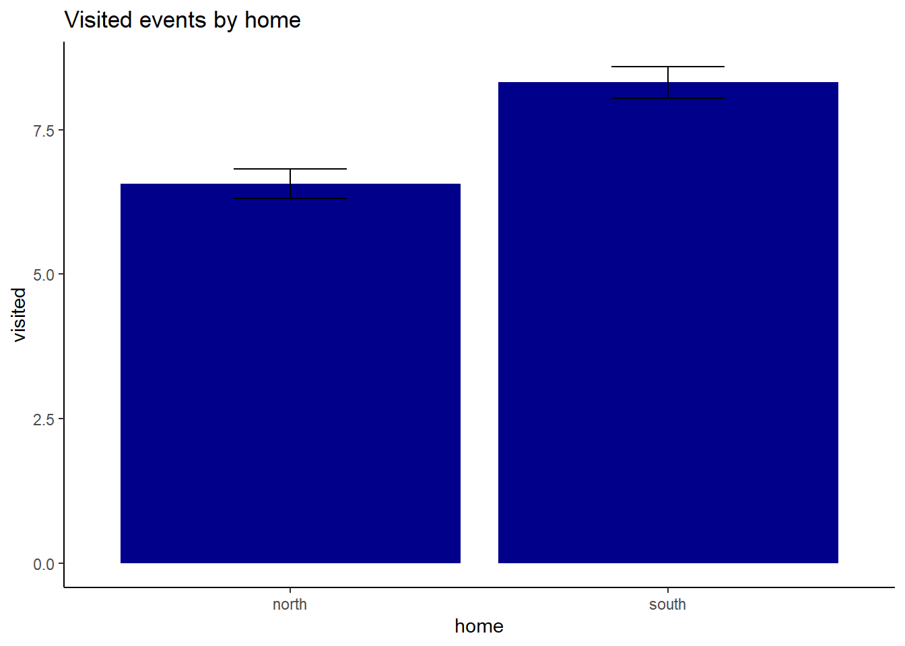
Es fällt hier natürlich auf, dass wir bei
diverse und
no answer zu wenige Datenpunkte
haben, um ein Konfidenzintervall zu bilden. Dies
ist der Grund, warum diese beiden Optionen bei
deskriptiven Analysen und Geschlechtereffekten
oft ignoriert werden.
Eine solche deskriptive Grafik können wir auch
mit mehreren Faktoren machen. Als nächstes
untersuchen wir
home und gender.
pd <- position_dodge(1, preserve = "single") # setzt die Balken nebeneinander
ggplot(dat, aes(home, visited, fill = gender)) +
stat_summary(fun = mean, geom = "bar", position = pd) +
stat_summary(fun.data = mean_se, geom = "errorbar", width=.3, position = pd)+
ggtitle("Visited events by home and gender")+
theme_classic()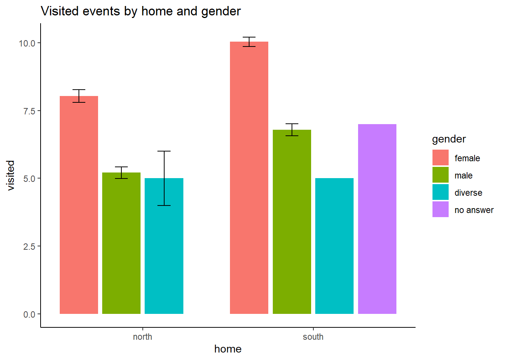
Das Ganze können wir auch mit Punkten machen.
ggplot(dat, aes(home, visited, color = gender)) +
stat_summary(fun = mean, geom = "point") +
stat_summary(fun.data = mean_se, geom = "errorbar", width=.3)+
ggtitle("Visited events by home and gender")+
theme_classic()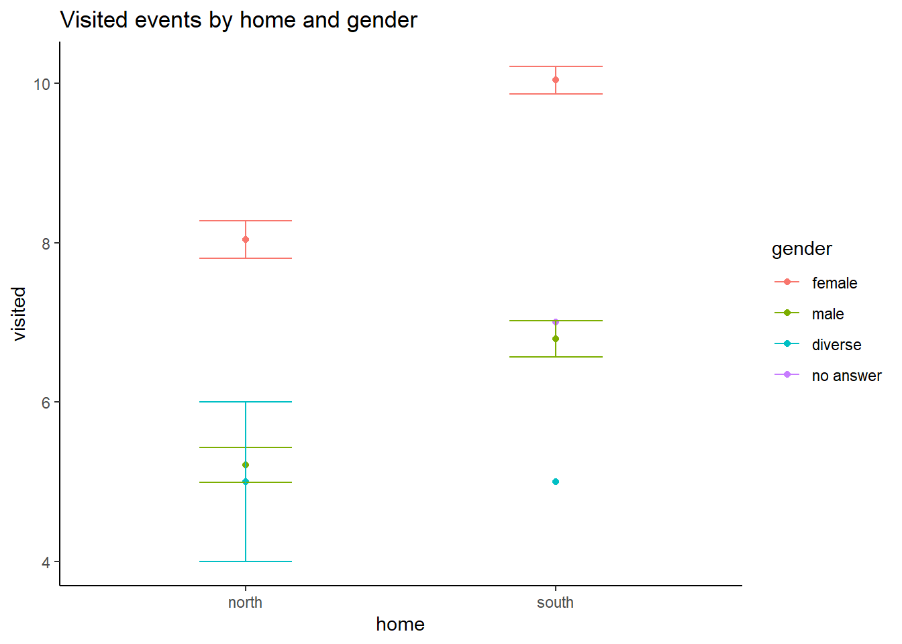
Auch hier sollten wir die Positionen der Punkte auf der x-Achse ein bisschen variieren, damit es übersichtlicher wird.
pd <- position_dodge(0.4)
ggplot(dat, aes(home, visited, color = gender)) +
stat_summary(fun = mean, geom = "point", position=pd) +
stat_summary(fun.data = mean_se, geom = "errorbar", position=pd, width=.3)+
ggtitle("Visited events by home and gender")+
theme_classic()
Das wars erstmal für die Grafiken. In der nächsten Sitzung wollen wir uns um deskriptive Statistik kümmern.
Anhang
Im Anhang findet ihr zu jeder Sitzung Codechunks, die ich für die Erstellung der Sitzung benutzt habe. Vielleicht sind die ja für den einen oder die andere spannend.
Datenerschaffung (nur für Testzwecke/Simulationen erlaubt)
gender = c(rep(1, 48), rep(2, 48), rep(3, 3), 4)
home = c(rep(1, 24), rep(2, 24), rep(1, 24), rep(2, 24), 1, 1, 2, 2)
visited = round(5 + rnorm(100, 0, 1) + (gender == 1) * 3 + (home - 1) * 2)
alcohol = round(5 + 0.75 * scale(visited)[, 1] * 0.75 + 0.25 * (rnorm(100, 0, 1) + (gender == 2) * 5 + (home - 1) * 2), 1)
weight = 70 + rnorm(100, 0, 10) + (gender == 2) * 15
dat = data.frame(gender, home, visited, alcohol, weight)
dat = dat[sample(1:nrow(dat)), ]
dat$subjectNr = 1:nrow(dat)
write.csv(dat, "consumption_ophase.csv", row.names=F)
rm(gender, home, visited, alcohol, weight)